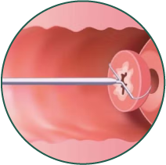
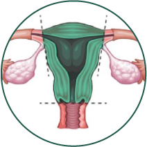

El tratamiento del CCU se clasifica según la etapa clínica. Da clic en las flechas para conocer cada uno:
CCU micro invasor (IA1, IA2)

Conización cervical

Histerectomía extrafascial
Según características del tumor y deseo de preservar la fertilidad.
1 de 6
CCU invasor temprano (IB1, IB2, IIA1)
Histerectomia radical con linfadenectomia pelvica con o sin muestreo ganglionar paraaórtico.
Para quienes no sean candidatas a cirugía, se recomienda teleterapia y braquiterapia.
2 de 6
CCU invasor localmente avanzado y metastásico (IB3-IVB)
Radioterapia y quimioterapia concomitante, con adicion de braquiterapia para lograr mayor eficacia.
3 de 6
CCU metastásico o recurrente
Quimioterapia paliativa y radioterapia para control sintomatico
4 de 6
Tratamiento en situaciones especiales
El CCU en personas embarazadas, inmunosuprimidas o en poblaciones vulnerables requiere un abordaje multidisciplinario que equilibre la efectividad del tratamiento con la seguridad del paciente y su contexto especifico.
5 de 6
Cuidados paliativos
Los cuidados paliativos mejoran la calidad de vida de las personas con CCU avanzado. Incluyen el manejo del dolor, sintomas asociados y apoyo psicoemocional para pacientes y sus familias. Se recomienda integrar estos cuidados desde el diagnóstico hasta la fase terminal de la enfermedad.